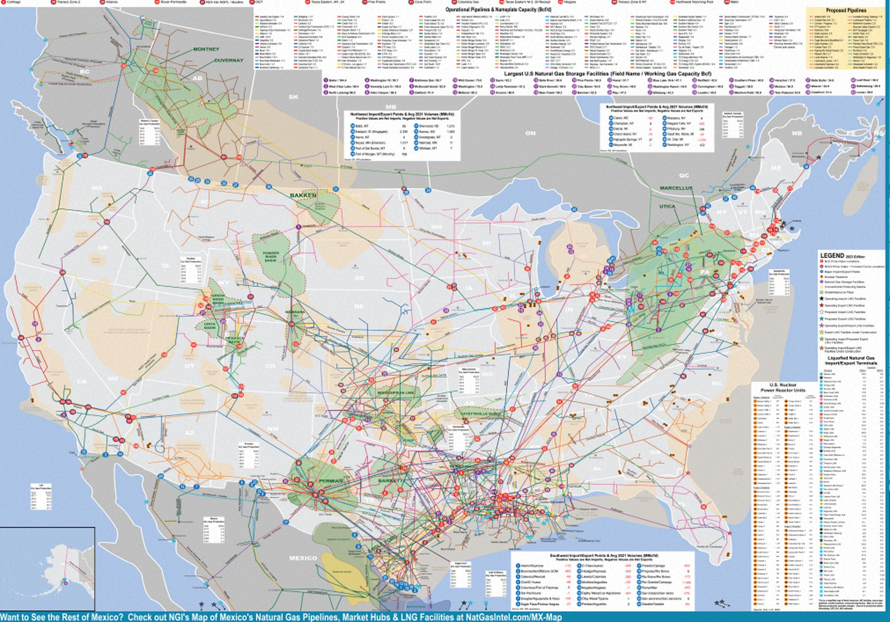

🇺🇸 북미 천연가스 지역간 Flow 대시보드
Base map: NGI North America Natural Gas Pipelines (2023) · Regions: S&P Global 지역구분 · Flow: 미국 flow.xlsx
배경 지도 투명도
기준일
−
+
100%
전체 보기
선택 상세
지역 또는 화살표를 클릭하면 상세 정보가 표시됩니다.
지역 (클릭하여 필터)
Flow 목록 (클릭 시 지도에 강조)
